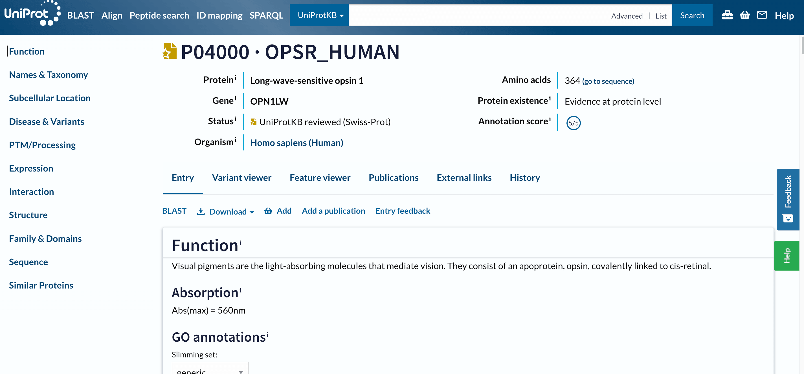
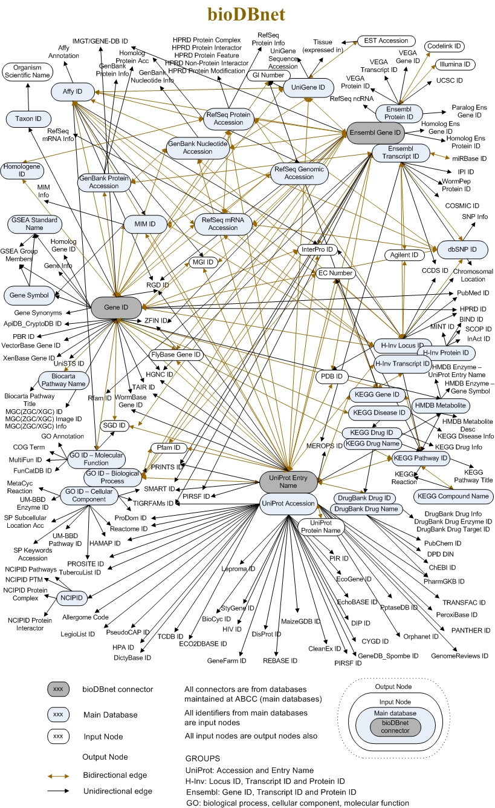

Ein Protein entlang der UniProt-Seite
| Autoren |
|
| Übersetzer |
|
| Gutachter |
|
ÜberblickFragen:
Lernziele:
Wie kann man Proteine mit Text-, Gen‑ oder Protein‑Namen suchen?
Wie interpretiert man die Informationen oben auf der UniProt‑Eintragsseite?
Welche Arten von Informationen kann man aus verschiedenen Download‑Formaten wie FASTA und JSON erwarten?
Wie wird die Funktion eines Proteins wie Opsine im Abschnitt „Funktion“ beschrieben?
Welche strukturierten Informationen findet man in den Abschnitten „Namen und Taxonomie“, „Subzelluläre Lage“, „Krankheit & Varianten“, „PTM/Verarbeitung“?
Wie erfährt man etwas über Protein‑Expression, Wechselwirkungen, Struktur, Familie, Sequenz und ähnliche Proteine?
Wie helfen die Tabs „Variant Viewer“ und „Feature Viewer“, Proteininformationen entlang der Sequenz abzubilden?
Was listet der Tab „Publikationen“ und wie kann man Publikationen filtern?
Was bedeutet es, Änderungen in der Eintrags‑Annotation im Laufe der Zeit nachzuverfolgen?
Voraussetzungen:
Durch das Erkunden von Protein‑Einträgen in UniProtKB soll man Funktion, Taxonomie, Struktur, Wechselwirkungen, Varianten und mehr interpretieren können.
Eindeutige Identifikatoren nutzen, um Datenbanken zu verbinden, Gen‑ und Protein‑Daten herunterzuladen, Sequenzmerkmale zu visualisieren und zu vergleichen.
- slides Slides: Learning about one gene across biological resources and formats
- tutorial Hands-on: Learning about one gene across biological resources and formats
Geschätzte Bearbeitungszeit: 1 StundeLevel: Einsteiger IntroductoryUnterstützende Materialien:Veröffentlicht: Mar 9, 2026Letzte Änderung: Mar 9, 2026Lizenz: Der Inhalt des Tutorials ist lizenziert unter der Creative Commons Attribution 4.0 International License. Das GTN Framework ist lizenziert unter MITversion Überarbeitung: 1
Wenn wir eine biologische Datenanalyse durchführen, erhalten wir vielleicht einige interessante Proteine, die wir untersuchen müssen. Aber wie können wir das tun? Welche Ressourcen stehen dafür zur Verfügung? Und wie kann man durch sie navigieren?
Das Ziel dieses Tutoriums ist es, uns damit vertraut zu machen, indem wir menschliche Opsine als Beispiel nehmen.
KommentarDieses Tutorial ist etwas untypisch: wir werden nicht in Galaxy arbeiten, sondern hauptsächlich außerhalb, in den Seiten der UniProt Datenbank.
KommentarDieses Tutorial ist als Fortsetzung des Tutorials “Ein Gen in verschiedenen Dateiformaten” gedacht, kann aber auch als eigenständiges Modul konsultiert werden.
Opsine befinden sich in den Zellen der Netzhaut. Sie fangen das Licht ein und leiten die Abfolge von Signalen ein, die zum Sehen führen, und das ist der Grund, warum sie, wenn sie beeinträchtigt sind, mit Farbenblindheit und anderen Sehstörungen in Verbindung gebracht werden.
Kommentar: Informationsquellen aus diesem LehrgangDas Tutorial, das Sie konsultieren, wurde hauptsächlich unter Hinzuziehung der UniProtKB-Ressourcen entwickelt, insbesondere des Tutorials Explore UniProtKB entry. Einige Sätze sind von dort ohne Änderungen übernommen worden.
Außerdem wurde das Thema auf der Grundlage von Gale Rhodes’ Bioinformatics Tutorial gewählt. Obwohl das Tutorial nicht mehr Schritt für Schritt nachvollzogen werden kann, da sich die genannten Ressourcen im Laufe der Zeit verändert haben, könnte es zusätzliche Erkenntnisse über Opsine liefern und insbesondere darüber, wie man auf der Grundlage evolutionärer Informationen Strukturmodelle von Proteinen erstellen kann.
AgendaIn diesem Tutorium werden wir uns folgendne Themen beschäftigen:
Die UniProtKB-Eintragsseite
Das Portal, das man besuchen muss, um alle Informationen über ein Protein zu erhalten, ist UniProtKB. Wir können dort über eine Textsuche oder über den Gen- oder Proteinnamen suchen. Versuchen wir es zunächst mit einer Reihe von allgemeinen Schlüsselwörtern, wie Human opsin.
Praktische Übung: Suche nach Human Opsin auf UniProtKB
- Öffnen Sie die UniProtKB
- Geben Sie
Human opsinin die Suchleiste ein- Starten Sie die Suche
FrageWie viele Ergebnisse haben wir erhalten?
410 Ergebnisse (zum Zeitpunkt der Erstellung dieses Tutorials)
Diese 410 Ergebnisse geben uns das Gefühl, dass wir genauer sein müssen (obwohl - Spoiler - unser eigentliches Ziel unter den ersten Treffern ist).
Um genau genug zu sein, schlagen wir vor, einen eindeutigen Identifikator zu verwenden. Aus dem vorherigen Tutorial kennen wir den Gennamen des Proteins, nach dem wir suchen, OPN1LW.
Praktische Übung: Suche nach OPN1LW auf UniProtKB
- Geben Sie
OPN1LWin die obere Suchleiste ein- Starten Sie die Suche
Frage
- Wie viele Ergebnisse haben wir erhalten?
- Was sollten wir tun, um diese Zahl zu verringern?
- 200+ Ergebnisse (zum Zeitpunkt der Erstellung dieses Tutorials)
- Wir müssen klären, wonach wir suchen: Menschliches OPN1LW
Wir müssen Human hinzufügen, um zu verdeutlichen, wonach wir suchen.
Praktische Übung: Suche nach Human OPN1LW auf UniProtKB
- Geben Sie
Human OPN1LWin die obere Suchleiste ein- Starten Sie die Suche
Frage
- Wie viele Ergebnisse haben wir erhalten?
- Haben wir ein Ergebnis, das OPN1LW als Genname enthält?
- 7 Ergebnisse (zum Zeitpunkt der Erstellung dieses Tutorials)
- Das erste Ergebnis ist mit
Gene: OPN1LW (RCP)gekennzeichnet
Das erste Ergebnis, beschriftet mit Gene: OPN1LW (RCP), ist unser Ziel, P04000 · OPSR_HUMAN. Bevor Sie die Seite öffnen, sollten Sie zwei Dinge beachten:
- Der Name des Proteins
OPSR_HUMANist anders als der Genname, ebenso wie ihre IDs. - Dieser Eintrag hat einen goldenen Stern, was bedeutet, dass er manuell kommentiert und kuratiert wurde.
Einsichtnahme in einen UniProt-Eintrag
Praktische Übung: Öffne ein Ergebnis auf UniProt
- Klicken Sie auf
P04000 · OPSR_HUMAN

Open image in new tabUm auf dieser langen Seite zu navigieren, ist das Menü (Navigationsleiste) auf der linken Seite äußerst nützlich. Daraus können wir ersehen, dass diese Datenbank Informationen über den Eintrag am enthält:
- die bekannten Funktionen,
- die Taxonomie,
- der Ort,
- Varianten und damit verbundene Krankheiten,
- Posttranslationale Modifikation (PTMs),
- der Ausdruck,
- die Wechselwirkungen,
- die Struktur,
- die Bereiche und ihre Klassifizierung,
- die Sequenzen
- ähnliche Proteine.
Die Navigationsleiste bleibt an der gleichen Stelle auf dem Bildschirm, wenn Sie sich in einem Eintrag nach oben oder unten bewegen, so dass Sie schnell zu den Abschnitten von Interesse navigieren können. Wir werden alle erwähnten Abschnitte separat betrachten, aber konzentrieren wir uns zunächst auf die Überschriften auf der linken Seite.
Oben auf der Seite sehen Sie die UniProt-Zugangsnummer und den Namen des Eintrags, den Namen des Proteins und des Gens, den Organismus, ob der Proteineintrag manuell von einem UniProt-Kurator überprüft wurde, seinen Annotationswert und den Evidenzgrad für seine Existenz.
Unterhalb der Hauptüberschrift finden Sie eine Reihe von Registerkarten (Eintrag, Variantenbetrachter, Funktionsbetrachter, Publikationen, Externe Links, Geschichte). Über die Registerkarten können Sie zwischen dem Eintrag, einer grafischen Ansicht der Sequenzmerkmale (Feature-Viewer), den Veröffentlichungen und den externen Links wechseln, die Sie jedoch vorerst ignorieren und sich nicht von der Registerkarte Eintrag aus bewegen.
Eintrag
Das nächste Menü ist bereits Teil der Registerkarte Entry. Es ermöglicht uns, eine BLAST-Sequenzähnlichkeitssuche für den Eintrag durchzuführen, ihn mit all seinen Isoformen auszurichten, den Eintrag in verschiedenen Formaten herunterzuladen oder ihn in den Warenkorb zu legen, um ihn für später zu speichern.
Frage
- Welche Formate sind im Dropdown-Menü Download verfügbar?
- Welche Art von Informationen würden wir über diese Dateiformate herunterladen?
- Die Formate sind:
Text,FASTA (canonical),FASTA (canonical & isoform,JSON,XML,RDF/XML,GFF- Die Formate
FASTAsollten (nach dem einleitenden Tutorium) vertraut klingen und beinhalten die Proteinsequenz, eventuell mit ihren Isoformen (in diesem Fall handelt es sich um eine Multi-FASTA). Abgesehen von diesen Formaten sind alle anderen Formate nicht protein- oder gar biologiespezifisch. Es handelt sich um allgemeine Dateiformate, die von Websites häufig verwendet werden, um die auf der Seite enthaltenen Informationen aufzunehmen. Wenn wir also die Dateitext(oder noch besser die Dateijson) herunterladen, erhalten wir dieselbe Annotation, auf die wir auf dieser Seite zugreifen, aber in einem Format, das programmatisch leichter zu analysieren ist.
Blättern wir nun auf der Einstiegsseite Abschnitt für Abschnitt.
Funktion
In diesem Abschnitt werden die Funktionen dieses Proteins wie folgt zusammengefasst:
Sehpigmente sind die lichtabsorbierenden Moleküle, die das Sehen vermitteln. Sie bestehen aus einem Apoprotein, dem Opsin, das kovalent an das Cis-Retinal gebunden ist.
Unabhängig davon, wie viele Details Sie verstehen (je nach Ihrem Hintergrund), ist dies angesichts der enormen Menge an Literatur und Studien, die über die Bestimmung einer Proteinfunktion hinausgehen, beeindruckend kurz und spezifisch. Wie auch immer, jemand hat die Arbeit für uns gemacht, und dieses Protein ist bereits vollständig in der Gene Ontology (GO) klassifiziert, die die molekulare Funktion, den biologischen Prozess und die zelluläre Komponente eines jeden klassifizierten Proteins beschreibt.
GO ist ein perfektes Beispiel für eine Datenbank/Ressource, die auf einem sehr komplexen Wissensuniversum aufbaut und es in ein einfacheres Diagramm übersetzt, auch auf die Gefahr hin, dass Details verloren gehen. Dies hat den großen Vorteil, dass es die Informationen organisiert, sie zählbar und analysierbar und programmatisch zugänglich macht, was uns letztendlich diese langen Zusammenfassungsseiten und KnowledgeBases ermöglicht.
Frage
- Mit welchen molekularen Funktionen ist dieses Protein verknüpft?
- An welche zellulären Komponenten ist dieses Protein gekoppelt?
- Für welche biologischen Prozesse ist dieses Protein annotiert?
- Photorezeptor-Protein, G-Protein-gekoppelter Rezeptor
- Membran der Photorezeptorscheibe
- Sinnestransduktion, Sehen
Names and Taxonomy
Weitere Beispiele für strukturierte Informationen sind im nächsten Abschnitt zu finden, z. B. in der Taxonomie. In diesem Abschnitt werden auch andere eindeutige Identifikatoren angegeben, die sich auf dieselbe biologische Einheit oder auf verknüpfte Einheiten beziehen (z. B. assoziierte Krankheiten im Menü MIM).
Frage
- Wie lautet der taxonomische Identifikator für dieses Protein?
- Wie lautet der Proteom-Identifikator, der mit diesem Protein verbunden ist?
- 9606, d.h. Homo sapiens
- UP000005640, Bestandteil des Chromosoms Xs
Subzelluläre Lage
Wir wissen bereits, wo sich unser Protein im menschlichen Körper befindet (in der Netzhaut, wie in der Funktionszusammenfassung angegeben), aber wo befindet es sich in der Zelle?
Frage
- Wo befindet sich unser Protein in der Zelle?
- Stimmt sie mit der zuvor beobachteten GO-Annotation überein?
- Der Abschnitt erklärt, dass es sich um ein “Multipass-Membranprotein” handelt, was bedeutet, dass es sich um ein Protein handelt, das in die Zellmembran eingesetzt wird und diese mehrfach durchläuft.
- Die GO-Anmerkung oben besagt, dass wir uns insbesondere auf die Photorezeptor(zell)membran beziehen.
Der Abschnitt “Subzelluläre Lage” enthält einen Bereich Features, in dem angegeben ist, welche Abschnitte der Proteinsequenz in die Membran eingefügt sind (Transmembrane) und welche nicht (Topologische Domäne).
FrageWie viele Transmembrandomänen und topologische Domänen gibt es?
8 Transmembran- und 7 topologische Domänen
Krankheit & Varianten
Wie wir aus dem vorangegangenen Tutorium wissen, ist dieses Gen/Protein mit mehreren Krankheiten assoziiert. In diesem Abschnitt wird diese Assoziation detailliert beschrieben und die spezifischen Varianten aufgeführt, die als krankheitsbezogen erkannt wurden.
FrageWelche Arten von wissenschaftlichen Studien erlauben es, den Zusammenhang zwischen einer genetischen Variante und Krankheiten zu beurteilen?
Drei gängige Methoden zur Bewertung des Zusammenhangs zwischen einer genetischen Variante und einer Krankheit sind:
Genomweite Assoziationsstudien (GWAS)
GWAS sind weit verbreitet, um gemeinsame genetische Varianten zu identifizieren, die mit Krankheiten in Verbindung stehen. Dabei wird das gesamte Genom einer großen Anzahl von Individuen gescannt, um Varianten zu identifizieren, die mit einer bestimmten Krankheit oder einem bestimmten Merkmal in Verbindung stehen.
Fall-Kontroll-Studien
Fall-Kontroll-Studien werden häufig eingesetzt, um Personen mit einer Krankheit mit solchen ohne Krankheit zu vergleichen, wobei der Schwerpunkt auf dem Vorhandensein oder der Häufigkeit bestimmter genetischer Varianten in beiden Gruppen liegt.
Familienkunde
Bei familienbasierten Studien werden genetische Varianten in Familien analysiert, in denen mehrere Mitglieder von einer Krankheit betroffen sind. Durch die Untersuchung der Vererbungsmuster von genetischen Varianten und ihrer Verbindung mit der Krankheit innerhalb von Familien können Forscher potenziell krankheitsassoziierte Gene identifizieren.
Diese Art von Studien würde eine umfangreiche Verwendung von Dateitypen zur Verwaltung genomischer Daten voraussetzen, wie z. B.: SAM (Sequence Alignment Map), BAM (Binary Alignment Map), VCF (Variant Calling Format) usw.
Dieser Abschnitt enthält auch einen Bereich Features, in dem die natürlichen Varianten entlang der Sequenz abgebildet sind. Unten wird auch hervorgehoben, dass eine detailliertere Ansicht der Merkmale entlang der Sequenz auf der Registerkarte Krankheit & Varianten zu finden ist, aber wir öffnen sie vorerst nicht.
PTM/Verarbeitung
Eine posttranslationale Modifikation (PTM) ist ein kovalentes Verarbeitungsereignis, das aus einer proteolytischen Spaltung oder aus der Hinzufügung einer modifizierenden Gruppe zu einer Aminosäure resultiert.
FrageWelche posttranslationalen Modifikationen gibt es bei unserem Protein?
Kette, Glykosylierung, Disulfidbindung, modifizierter Rückstand
Expression
Wir wissen bereits, wo sich das Protein in der Zelle befindet, aber bei menschlichen Proteinen haben wir oft Informationen darüber, wo es sich im menschlichen Körper befindet, d. h. in welchen Geweben. Diese Informationen können aus dem Human ExpressionAtlas oder anderen ähnlichen Quellen stammen.
FrageIn welchem Gewebe befindet sich das Protein?
Die drei Farbpigmente befinden sich in den Zapfen-Photorezeptorzellen.
Interaktion
Proteine erfüllen ihre Funktion durch ihre Interaktion mit der Umgebung, insbesondere mit anderen Proteinen. In diesem Abschnitt werden die Interaktoren unseres Proteins von Interesse in einer Tabelle aufgeführt, die wir auch nach subzellulärer Lage, Krankheiten und Art der Interaktion filtern können.
Die Quelle dieser Informationen sind Datenbanken wie STRING, und die Einstiegsseite für unser Protein ist direkt von diesem Abschnitt aus verlinkt.
Praktische Übung: Suche nach Human OPN1LW auf UniProtKB
- Klicken Sie auf den STRING-Link in einer anderen Registerkarte
Frage
- Wie viele verschiedene Dateiformate kann man von dort herunterladen?
- Welche Art von Information wird in jeder Datei übermittelt?
STRING bietet Daten in herunterladbaren Dateiformaten zur Unterstützung weiterer Analysen. Das primäre von STRING verwendete Dateiformat ist das TSV-Format (Tab-Separated Values), das Proteininteraktionsdaten in einem strukturierten, tabellarischen Layout darstellt. Dieses Format eignet sich gut für die einfache Integration in verschiedene Datenanalysetools und Software. Darüber hinaus bietet STRING Daten im PSI-MI (Proteomics Standards Initiative Molecular Interactions) XML-Format an, einem Standard für die Darstellung von Proteininteraktionsdaten, der die Kompatibilität mit anderen Interaktionsdatenbanken und Analyseplattformen gewährleistet. Diese Dateiformate ermöglichen es Forschern, die Fülle an Proteininteraktionsdaten in STRING für ihre eigenen Studien und Analysen zu nutzen. Die Forscher können auch visuelle Darstellungen von Proteinnetzwerken in Bildformaten wie PNG und SVG herunterladen, die sich für Präsentationen und Veröffentlichungen eignen. Für fortgeschrittene Analysen bietet STRING “Flat Files” mit detaillierten Interaktionsinformationen und “MFA”-Dateien (Multiple Alignment Format), die für den Vergleich mehrerer Proteinsequenzen nützlich sind. Diese verschiedenen herunterladbaren Dateiformate ermöglichen es Forschern, die Fülle an Proteininteraktionsinformationen in STRING für ihre eigenen Studien und Analysen zu nutzen.
Struktur
Sind Sie neugierig auf die komplizierten dreidimensionalen Strukturen von Proteinen? Der Abschnitt Struktur auf der UniProtKB-Eintragsseite ist Ihr Tor zur Erkundung der faszinierenden Welt der Proteinarchitektur.
In diesem Abschnitt finden Sie Informationen über experimentell bestimmte Proteinstrukturen. Diese Strukturen liefern entscheidende Erkenntnisse darüber, wie Proteine funktionieren und mit anderen Molekülen interagieren. Sie werden interaktive Ansichten der Proteinstruktur entdecken, die Sie direkt im UniProtKB-Eintrag erkunden können. Diese Funktion bietet eine ansprechende Möglichkeit, durch die Domänen, Bindungsstellen und andere funktionelle Regionen des Proteins zu navigieren. Wenn Sie sich mit dem Abschnitt Struktur befassen, gewinnen Sie ein tieferes Verständnis der physikalischen Grundlage der Proteinfunktion und entdecken die Fülle an Informationen, die Strukturdaten erschließen können.
Frage
- Welche Variante ist mit der Farbenblindheit verbunden?
- Kannst du diese bestimmte Aminosäure in der Struktur finden?
- Können Sie eine Vermutung formulieren, warum diese Mutation störend ist?
- Im Abschnitt Krankheit & Varianten entdecken wir, dass der Wechsel von Glycin (G) zu Glutaminsäure (E) an Position 338 der Proteinsequenz mit Farbenblindheit in Verbindung steht.
- Im Strukturbetrachter können wir das Molekül verschieben und mit der Maus über die Struktur fahren, um das AA an Position 338 zu finden. Es kann einige Zeit in Anspruch nehmen, die vielfältigen helikalen Anordnungen dieser Strukturen zu durchschauen. Das Glycin an Position 338 befindet sich nicht in einer Helix, sondern in etwas, das wie eine Schleife aussieht, kurz vor einem Bereich mit geringer Sicherheit in der Struktur.
- Auf der Grundlage der bisher gesammelten Informationen können wir eine Hypothese aufstellen, warum dieses Gen störend ist. Die Mutation befindet sich nicht in einer Helix (normalerweise sind bei Transmembranproteinen Helices in die Membran eingefügt), sondern in einer der größeren Domänen, die aus der Membran in die Zelle hinein oder aus ihr heraus ragen. Diese Mutation unterbricht wahrscheinlich nicht die Struktur in ihren membraninternen Abschnitten, sondern eher eine der funktionellen Domänen. Wenn Sie tiefer eindringen möchten, können Sie im Feature Viewer überprüfen, ob es sich um das extra- oder intrazelluläre Segment handelt.
Woher stammen die Informationen in der Strukturanzeige?
Praktische Übung: Suche nach Human OPN1LW auf UniProtKB
- Klicken Sie auf das Download-Symbol unterhalb der Struktur
- Überprüfen Sie die heruntergeladene Datei
Dies ist eine PDB-Datei (Protein Data Bank), mit der Sie die Anordnung der Atome und Aminosäuren des Proteins visualisieren und analysieren können.
Die Links zu den 3D-Strukturdatenbanken enthalten jedoch keinen Verweis auf die PDB-Datenbank. Stattdessen verweist der erste Link auf die AlphaFoldDB. Die AlphaFold-Datenbank ist eine umfassende Ressource, die vorhergesagte 3D-Strukturen für ein breites Spektrum von Proteinen bietet. Mithilfe von Deep-Learning-Techniken und evolutionären Informationen sagt AlphaFold die räumliche Anordnung von Atomen innerhalb eines Proteins genau voraus und trägt so zu unserem Verständnis von Proteinfunktionen und -interaktionen bei.
Es handelt sich also um eine Vorhersage der Struktur, nicht um eine experimentell validierte Struktur. Aus diesem Grund ist sie nach dem Vertrauensgrad eingefärbt: Die blauen Abschnitte haben einen hohen Vertrauensgrad, d. h. die Vorhersage ist sehr zuverlässig, während die orangefarbenen Abschnitte weniger zuverlässig sind oder eine ungeordnete (flexiblere und mobilere) Struktur haben. Dennoch wird diese Information durch eine PDB-Datei dargestellt, da sie immer noch strukturell ist.
Familie und Domänen
Der Abschnitt Familie und Domänen auf der UniProtKB-Eintragsseite bietet einen umfassenden Überblick über die evolutionären Beziehungen und funktionellen Domänen innerhalb eines Proteins. Dieser Abschnitt bietet Einblicke in die Zugehörigkeit des Proteins zu Proteinfamilien, Superfamilien und Domänen und gibt Aufschluss über seine strukturellen und funktionellen Eigenschaften.
Der Bereich Features bestätigt in der Tat, dass mindestens eine der beiden Domänen, die aus der Membran herausragen (die N-terminale), gestört ist. Dieser Bereich enthält in der Regel Informationen über konservierte Regionen, Motive und wichtige Sequenzmerkmale, die zur Rolle des Proteins bei verschiedenen biologischen Prozessen beitragen. Der Abschnitt bestätigt noch einmal, dass es sich um ein Transmembranprotein handelt, und verlinkt zu verschiedenen Ressourcen für phylogenetische Daten, Proteinfamilien oder Domänen, die uns helfen zu verstehen, wie Proteine gemeinsame Vorfahren haben, sich entwickeln und spezielle Funktionen erhalten.
Sequence
All diese Informationen über die Entwicklung, Funktion und Struktur des Proteins sind letztlich in seiner Sequenz kodiert. In diesem Abschnitt haben wir erneut die Möglichkeit, die FASTA-Datei herunterzuladen, in der die Sequenz kodiert ist, und auf die Quelle dieser Daten zuzugreifen: die genomischen Sequenzierungsexperimente, in denen sie bewertet wurden. In diesem Abschnitt wird auch berichtet, wenn Isoformen entdeckt wurden.
FrageWie viele potenzielle Isoformen sind diesem Eintrag zugeordnet?
1: H0Y622
Ähnliche Proteine
Der letzte Abschnitt der UniProt-Eintragsseite meldet ähnliche Proteine (dies ist im Grunde das Ergebnis einer Clusterbildung mit den Schwellenwerten 100%, 90% und 50% Identität).
Frage
- Wie viele ähnliche Proteine bei 100%iger Identität?
- Wie viele ähnliche Proteine bei 90% Identität?
- Wie viele ähnliche Proteine bei 50% Identität?
- 0
- 83
- 397
Wie Sie beim Betrachten dieser Seite vielleicht schon vermutet haben, besteht ein großer Teil der Verarbeitung biologischer Daten über ein Protein darin, verschiedene Arten von Informationen entlang der Sequenz zuzuordnen und zu verstehen, wie sie sich gegenseitig beeinflussen. Eine visuelle Abbildung (und eine Tabelle mit denselben Informationen) bieten die beiden alternativen Registerkarten zur Ansicht dieses Eintrags, d. h. der Variantenbetrachter und der Merkmalbetrachter.
Variantenbetrachter
Praktische Übung: Variant Viewer
- Klicken Sie auf die Registerkarte Variant Viewer
Der Variantenviewer zeigt alle bekannten alternativen Versionen dieser Sequenz an. Für einige von ihnen ist die Wirkung (pathogen oder gutartig) bekannt, für andere nicht.
FrageWie viele Varianten sind wahrscheinlich krankheitsauslösend?
Wenn wir in der Variantenansicht herauszoomen, sehen wir, dass wir 5 rote Punkte haben, also 5 Varianten, die wahrscheinlich pathogen sind.
Die hohe Anzahl von Varianten, die Sie in diesem Abschnitt finden, deutet darauf hin, dass “Proteinsequenzen” (ebenso wie Gensequenzen, Proteinstrukturen usw.) tatsächlich weniger fixe Einheiten sind, als wir denken.
Feature Viewer
Praktische Übung: Feature Viewer
- Klicken Sie auf die Registerkarte Feature viewer
Der Feature Viewer ist im Grunde eine zusammengefasste Version aller Features-Bereiche, die wir auf der Entry-Seite gefunden haben, einschließlich Domains & sites, Molecule processing, PTMs, Topology, Proteomics und Variants. Wenn Sie im Viewer auf ein beliebiges Merkmal klicken, wird die entsprechende Region in der Struktur als die interessierende Variante fokussiert
Praktische Übung: Variant Viewer
- Erweitern Sie den Teil Varianten
- Herauszoomen
- Klicken Sie auf unsere Variante von Interesse (der rote Punkt an Position 338)
FrageWie ist die Topologie an diesem Ort?
Eine topologische zytoplasmatische Domäne
Werfen wir abschließend noch einen Blick auf die anderen Registerkarten.
Veröffentlichungen
Praktische Übung: Publikation
- Klicken Sie auf die Registerkarte Publikation
Unter Publikationen sind wissenschaftliche Veröffentlichungen zu dem Protein aufgeführt. Diese werden durch die Zusammenführung einer vollständig kuratierten Liste in UniProtKB/Swiss-Prot und automatisch importierter Publikationen gesammelt. Auf dieser Registerkarte können Sie die Publikationsliste nach Quelle und Kategorien filtern, die auf der Art der Daten basieren, die eine Veröffentlichung über das Protein enthält (z. B. Funktion, Interaktion, Sequenz usw.), oder nach der Anzahl der Proteine in der entsprechenden Studie, die sie beschreibt (“small scale” vs. “large scale”).
Frage
- Wie viele Veröffentlichungen gibt es zu diesem Protein?
- Wie viele Veröffentlichungen enthalten Informationen über seine Funktion?
- 57
- 23
Externe Links
Praktische Übung: Externe Links
- Klicken Sie auf die Registerkarte Externe Links
Die Registerkarte Externe Links fasst alle Verweise auf externe Datenbanken und Informationsquellen zusammen, die wir in den einzelnen Abschnitten der Einstiegsseite gefunden haben. Der Linktext enthält oft die eindeutigen Identifikatoren, die dieselbe biologische Einheit in anderen Datenbanken darstellen. Um ein Gefühl für diese Kompatibilität zu bekommen, sehen Sie sich das folgende Bild an (das bereits teilweise veraltet ist).

Open image in new tabGeschichte
Schließlich ist auch die Registerkarte Geschichte interessant. Sie zeigt alle früheren Versionen der Annotationen dieses Eintrags an und stellt sie zum Herunterladen zur Verfügung, d.h. die gesamte “Entwicklung” seiner Annotation, in diesem Fall bis 1988 zurückgehend.
FrageWurde dieser Eintrag jemals nicht manuell kommentiert?
Um diese Frage zu beantworten, können Sie in der Tabelle zurückblättern und die Spalte
Databaseüberprüfen. War dieser Eintrag jemals in TrEMBL statt in SwissProt? Nein, also wurde dieser Eintrag von Anfang an manuell annotiert.
Du hast das Tutorial abgeschlossen
Zusammenfassung
Wie man in UniProtKB‑Einträgen navigiert und umfassende Details über Proteine wie Funktion, Taxonomie und Wechselwirkungen abruft.
Der „Variant Viewer“ und der „Feature Viewer“ sind Werkzeuge zur visuellen Erkundung von Proteinvarianten, Domänen, Modifikationen und anderen Sequenzmerkmalen.
Das Verständnis erweitern durch externe Links zur Querverweis‑Datenrecherche und komplexen Zusammenhängen.
Die Historie‑Registerkarte nutzen, um frühere Versionen von Eintrags‑Annotationen anzuzeigen.
Häufig gestellte Fragen
Fragen zu diesem Tutorial? Schau auf die verfügbaren FAQ-Seiten und Support-KanäleFeedback
Feedback Möglichkeit für Lehrende: Wie lief dein Kurs.
Für Kursteilnehmer/-innen oder Studierende: Über Rückmeldung durch das untenstehende Formular würden wir uns freuen.

Dieses Tutorial zitieren
- Lisanna Paladin, Bérénice Batut, Ein Protein entlang der UniProt-Seite (Galaxy Training Materials). https://training.galaxyproject.org/training-material/topics/data-science/tutorials/online-resources-protein/tutorial_DE.html Online; accessed TODAY
- Hiltemann, Saskia, Rasche, Helena et al., 2023 Galaxy Training: A Powerful Framework for Teaching! PLOS Computational Biology 10.1371/journal.pcbi.1010752
- Batut et al., 2018 Community-Driven Data Analysis Training for Biology Cell Systems 10.1016/j.cels.2018.05.012
@misc{data-science-online-resources-protein, author = "Lisanna Paladin and Bérénice Batut", title = "Ein Protein entlang der UniProt-Seite (Galaxy Training Materials)", year = "", month = "", day = "", url = "\url{https://training.galaxyproject.org/training-material/topics/data-science/tutorials/online-resources-protein/tutorial_DE.html}", note = "[Online; accessed TODAY]" } @article{Hiltemann_2023, doi = {10.1371/journal.pcbi.1010752}, url = {https://doi.org/10.1371%2Fjournal.pcbi.1010752}, year = 2023, month = {jan}, publisher = {Public Library of Science ({PLoS})}, volume = {19}, number = {1}, pages = {e1010752}, author = {Saskia Hiltemann and Helena Rasche and Simon Gladman and Hans-Rudolf Hotz and Delphine Larivi{\`{e}}re and Daniel Blankenberg and Pratik D. Jagtap and Thomas Wollmann and Anthony Bretaudeau and Nadia Gou{\'{e}} and Timothy J. Griffin and Coline Royaux and Yvan Le Bras and Subina Mehta and Anna Syme and Frederik Coppens and Bert Droesbeke and Nicola Soranzo and Wendi Bacon and Fotis Psomopoulos and Crist{\'{o}}bal Gallardo-Alba and John Davis and Melanie Christine Föll and Matthias Fahrner and Maria A. Doyle and Beatriz Serrano-Solano and Anne Claire Fouilloux and Peter van Heusden and Wolfgang Maier and Dave Clements and Florian Heyl and Björn Grüning and B{\'{e}}r{\'{e}}nice Batut and}, editor = {Francis Ouellette}, title = {Galaxy Training: A powerful framework for teaching!}, journal = {PLoS Comput Biol} }
Förderung
Diese Personen oder Organisationen unterstützten die Entwicklung dieser Quelle finanziell.
Herzlichen Glückwunsch zum erfolgreichen Abschluss dieses Tutorials!